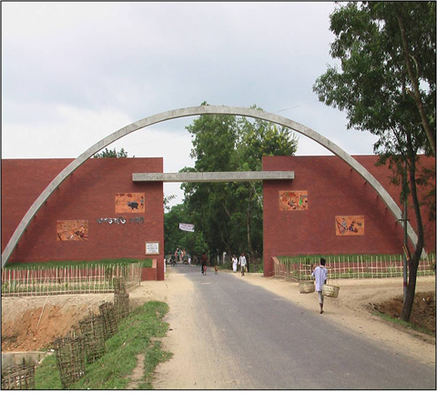

বৈচিত্র্যময় খাগড়াছড়ি

খাগড়াছড়ি গেইট
১৯৮৩ সনের ৭ই নভেম্বর খাগড়াছড়ি পার্বত্য জেলা গঠিত হয়। ২২.৩৮ডিগ্রী হতে ২৩.৪৪ডিগ্রী উত্তর অক্ষাংশ ও ৯১.৪২ ডিগ্রী হতে ৯২.১১ ডিগ্রী পূর্ব দ্রাঘিমাংশে এর অবস্থান। পাহাড়, ছোট ছোট নদী, ছড়া ও সমতল ভূমি মিলে এটি একটি অপরূপ সৌন্দর্য্যমন্ডিত ঢেউ খেলানো এলাকা।
চেঙ্গী, মাইনী ও ফেণী প্রভৃতি এ জেলার উল্লেখযোগ্য নদী। এ ছাড়াও এতে রয়েছে ৩৩৬৮টি পুকুর, জলাশয় ও দীঘি যার ৬৭% খাস।
জেলার উত্তর ও পশ্চিমে ভারতের ত্রিপুরা রাজ্য, দক্ষিণে চট্টগ্রাম ও রাঙ্গামাটি জেলা এবং পূর্বে রাঙ্গামাটি জেলা অবস্থিত। মোট আয়তন ২৭৪৯.১৬ বর্গ কিলোমিটার। উঁচু ভূমির পরিমাণ ৮৫% প্রায় এবং সমতল ভূমির পরিমাণ ১৫% (প্রায়)।
জেলায় মোট ১২২টি মৌজার রয়েছে যার মধ্যে ৮৯টি মং সার্কেল ও ৩৩টি চাকমা সার্কেলের অন্তর্ভূক্ত। মং সার্কেলের আওতাধীন এলাকাগুলো হচ্ছে খাগড়াছড়ি সদর, মাটিরাঙ্গা, রামগড়, মানিকছড়ি, মহালছড়ি, পানছড়ি ও লক্ষ্মীছড়ি উপজেলার আংশিক এবং চাকমা সার্কেলের অধীনে লক্ষ্মীছড়ি উপজেলার আংশিক ও দীঘিনালা উপজেলা।
গ্রামের সংখ্যা ১,৭০২টি, ইউনিয়ন-৩৮টি, উপজেলা-০৯টি, থানা-০৯টি (খাগড়াছড়ি সদর, দীঘিনালা, পানছড়ি, মাটিরাঙ্গা, মানিকছড়ি, মহালছড়ি, লক্ষীছড়ি, রামগড় ও গুইমারা), পৌরসভা-০৩টি (খাগড়াছড়ি, রামগড় ও মাটিরাঙ্গা)।